Сравнение прогонов E03 → E05
Модель deepseek-v4-flash, пул из 12 задач. Клик по картинке — открыть в полном размере.
69 → 76средний score
5/8 → 7/12без жёстких конфликтов
31 → 34пересечений стрелок
cards-set без изменений
не граф: набор карточек, сетка и воздух
E03 100/100
отлично · ok
8 итераций · 0 пересечений · отказов 0 · пропорция 1.29
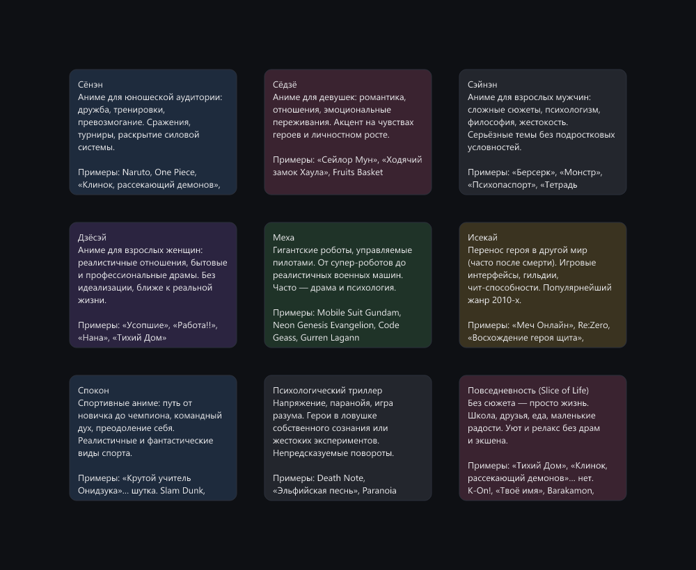
E05 100/100
отлично · ok
5 итераций · 0 пересечений · отказов 0 · пропорция 1.29
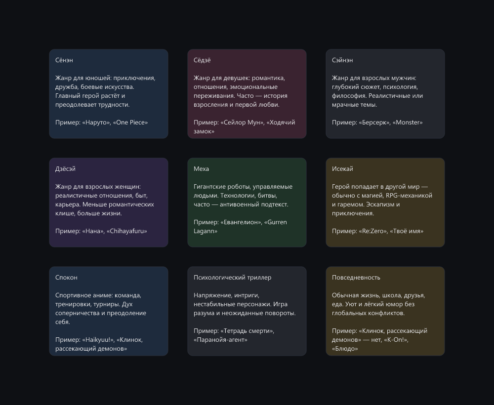
pipeline-cicd +24
линейный конвейер с ветвлением, направление слева направо
E03 76/100
хорошо · ok
9 итераций · 2 пересечений · отказов 0 · пропорция 0.29
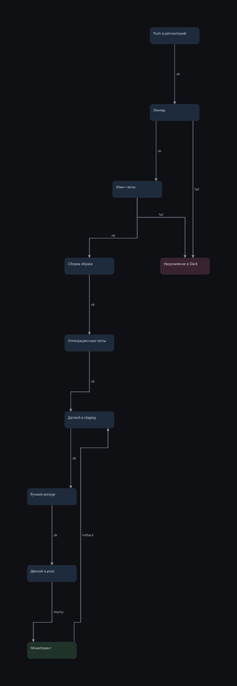
E05 100/100
отлично · ok
7 итераций · 0 пересечений · отказов 0 · пропорция 0.32
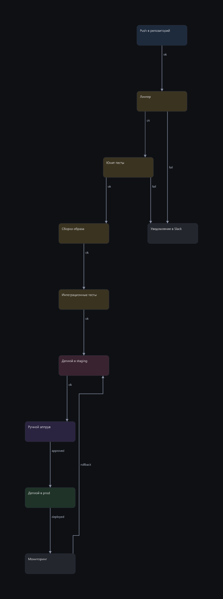
overlap-stack
особое требование: намеренное перекрытие блоков
E05 100/100
отлично · ok
8 итераций · 0 пересечений · отказов 1 · пропорция 1.16
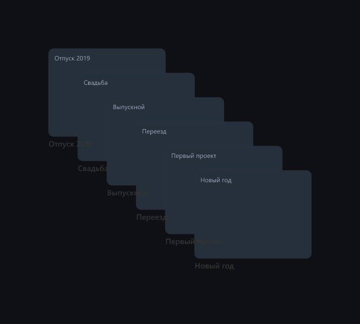
next-to-occupied +1
новая композиция рядом с занятой зоной, без наложений
E03 97/100
отлично · ok
8 итераций · 0 пересечений · отказов 0 · пропорция 0.45
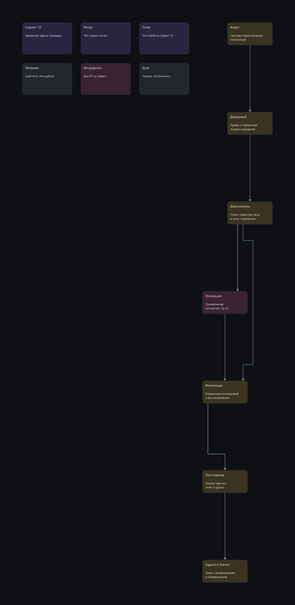
E05 98/100
отлично · ok
9 итераций · 0 пересечений · отказов 0 · пропорция 0.58
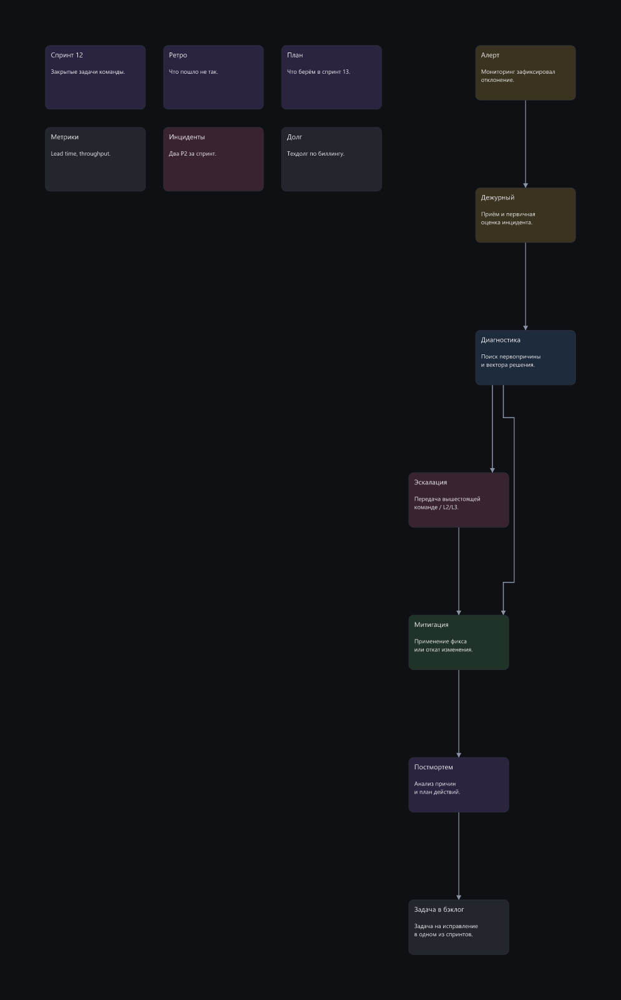
fix-broken
починка готовой плохой схемы, а не постройка с нуля
E05 85/100
хорошо · ok
13 итераций · 1 пересечений · отказов 1 · пропорция 7.9
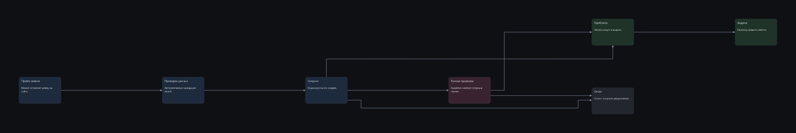
tight-row
особое требование: плотный ряд вопреки правилам по умолчанию
E05 81/100
хорошо · ok
5 итераций · 0 пересечений · отказов 0 · пропорция 11.65
tree-org +2
иерархия, ветви должны держаться у своих корней
E03 74/100
хорошо
40 итераций · 2 пересечений · отказов 0 · пропорция 2.47
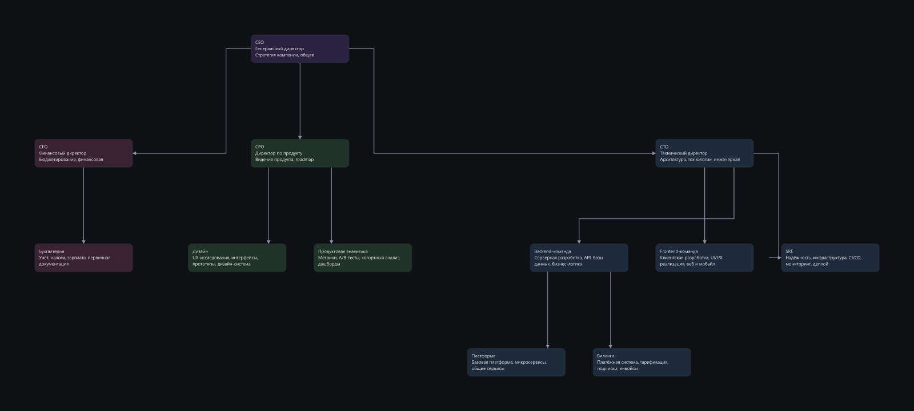
E05 76/100
хорошо
8 итераций · 2 пересечений · отказов 0 · пропорция 1.89
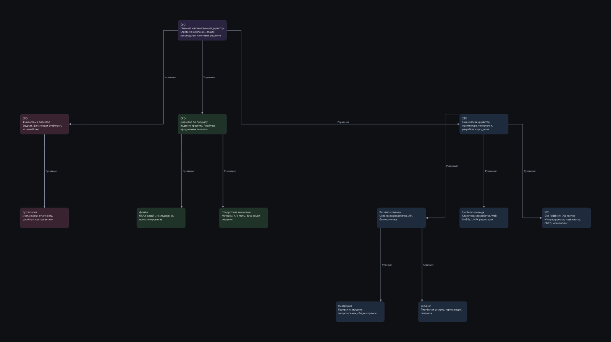
states-order без изменений
граф с циклами и обратными связями
E03 68/100
терпимо · ok
10 итераций · 3 пересечений · отказов 0 · пропорция 0.3
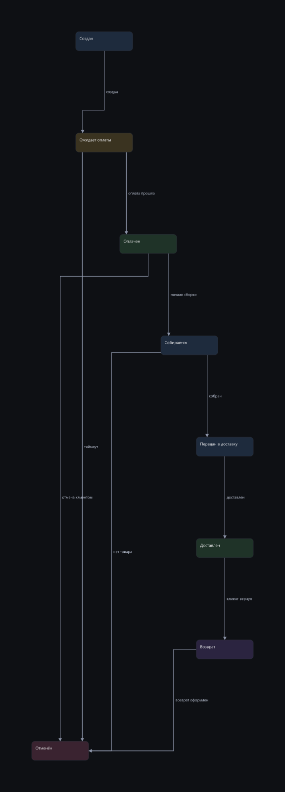
E05 68/100
терпимо · ok
18 итераций · 3 пересечений · отказов 0 · пропорция 0.26
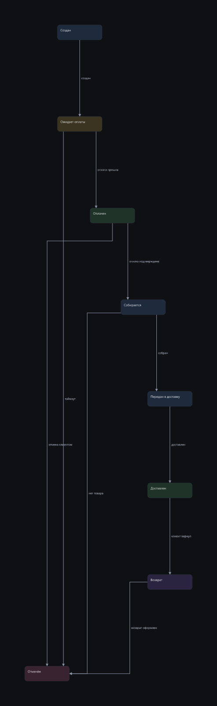
wiki-anime -4
вики по документу, чистый лист, 8-10 узлов, дерево связей
E03 71/100
хорошо · ok
13 итераций · 2 пересечений · отказов 0 · пропорция 0.67
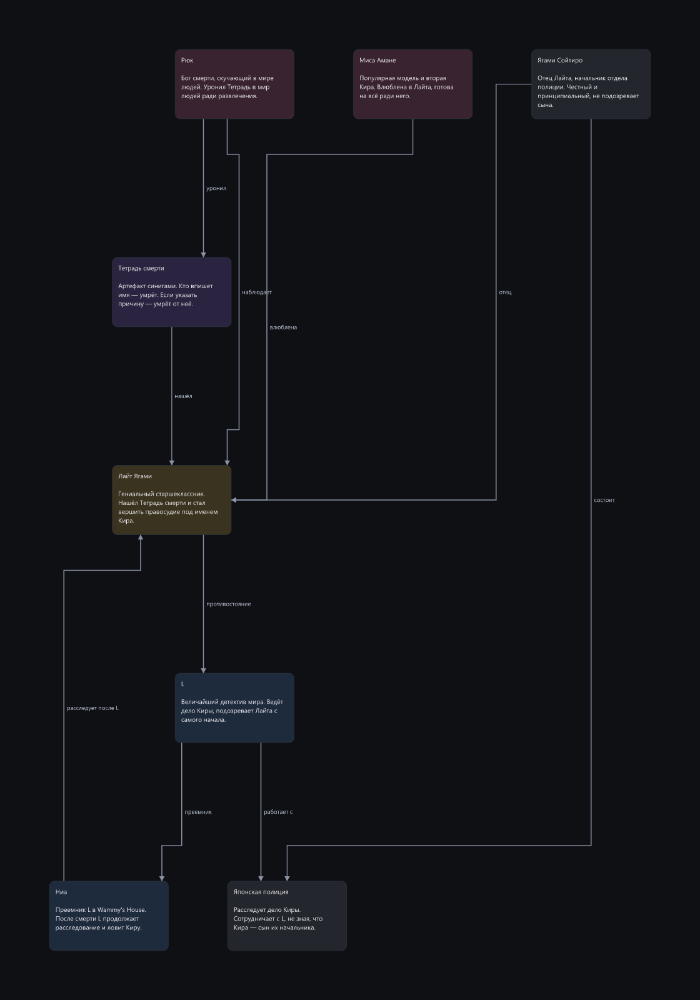
E05 67/100
терпимо
23 итераций · 1 пересечений · отказов 0 · пропорция 0.7
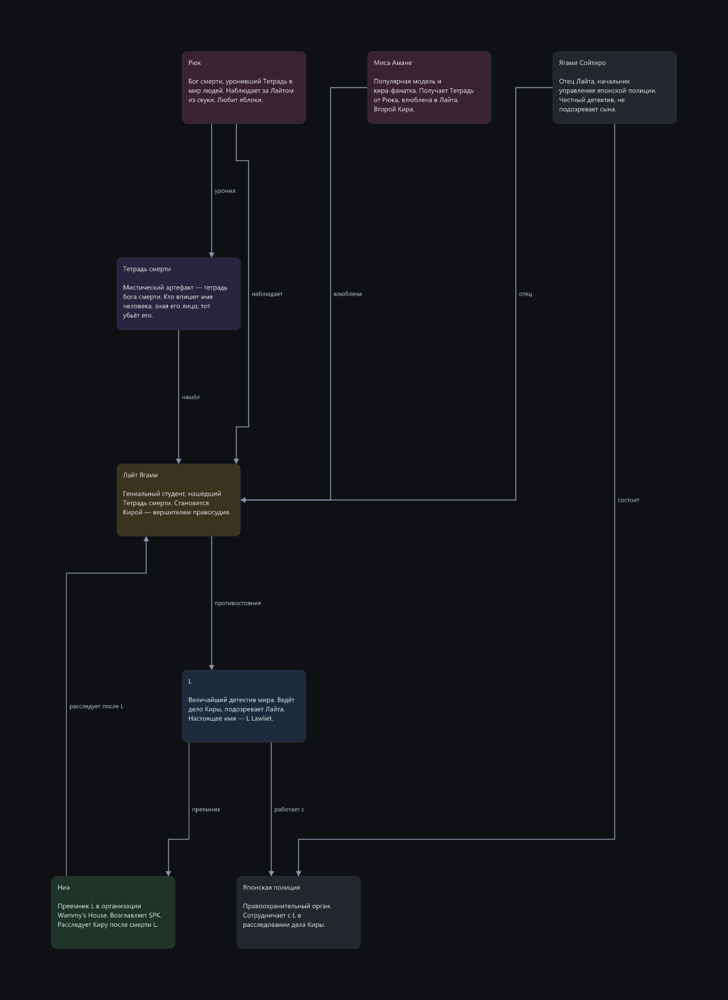
wide-timeline
композиция, которой идейно положено быть широкой и низкой
E05 56/100
терпимо
13 итераций · 0 пересечений · отказов 3 · пропорция 15.83
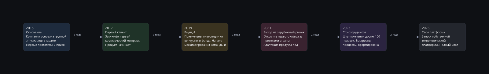
extend-existing +14
дополнение готового графа новыми узлами без ломки старого
E03 39/100
плохо
50 итераций · 7 пересечений · отказов 3 · пропорция 3.36
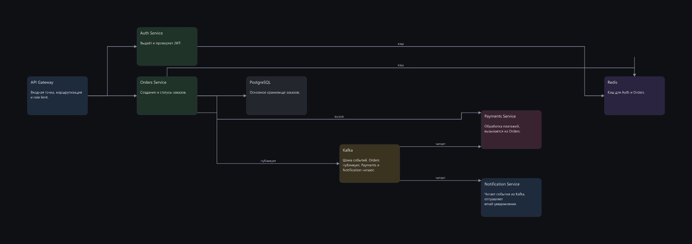
E05 53/100
терпимо
21 итераций · 5 пересечений · отказов 0 · пропорция 0.94
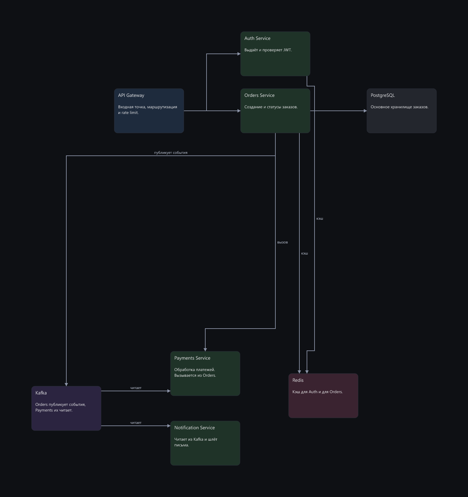
dense-arch -5
стресс: 14 узлов, плотный граф, несколько подсистем
E03 27/100
плохо
11 итераций · 15 пересечений · отказов 0 · пропорция 1.08
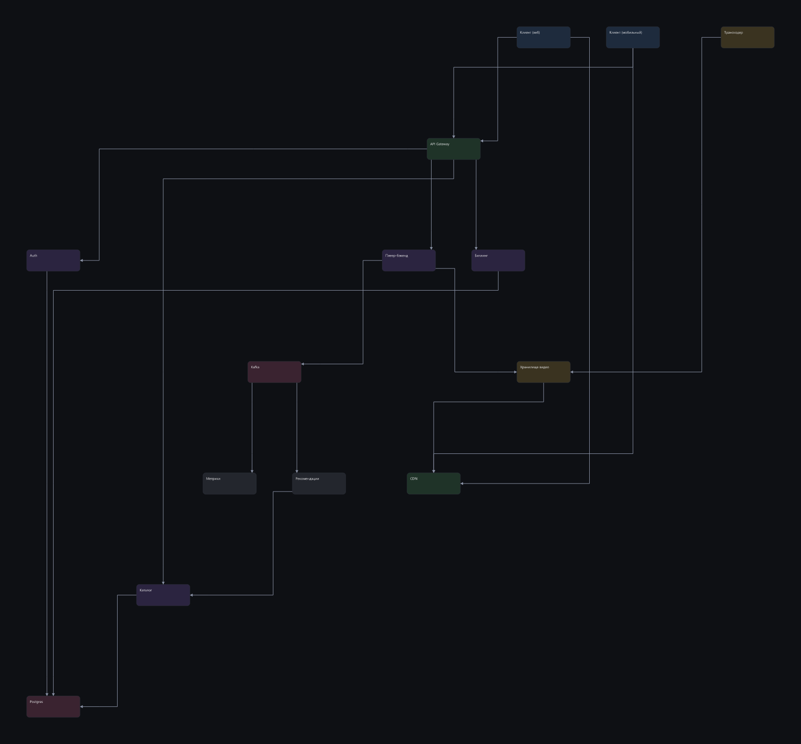
E05 22/100
плохо
12 итераций · 22 пересечений · отказов 0 · пропорция 1.23